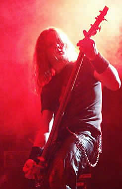

Entrevista
do Therion à Fábio Arbartavicius
Alguns definem o som de vocês como Heavy Metal outros como Shynphonic Metal e alguns até como Gothic Metal. Queria saber como vocês definem o som da banda? (Christofer Johnsson) Podemos dizer que é "blá blá blá metal". Nós não temos um metal específico para descrever para as pessoas, nós temos apenas o metal. Então não há nome para o que fazemos é um grande show com muitas influências diferentes e toda a música voltada para o metal. Nós temos problemas com publicações por várias coisas que eu não sei do que chamar. Então eu digo é apenas Therion.
No primeiro show de vocês aqui no Brasil em 2001 o público cantou em couro quase todas as músicas, aparentemente vocês não esperavam uma recepção tão calorosa assim dos fãs. Tanto que vocês prometeram voltar e voltaram, o que vocês acharam do show desta vez? (Kristian Niemann) O show foi realmente ótimo, um dos melhores, nós esperávamos bem menos do que um público tão animado com o qual nos deparamos. Nós não distinguimos um show do outro, mas esse foi realmente muito bom todos sorrindo e felizes, então adoramos esse show. Do palco a gente percebe quando o show vai bem.
Para quem ouve seus novos trabalhos os discos Sirius B e Lemuria percebe uma certa diferença entre eles quanto ao estilo musical. Você poderia falar um pouco sobre isso? (Christofer Johnsson) Nós gravamos os dois álbuns ao mesmo tempo, mas tínhamos músicas para gravar três álbuns então nós fizemos esses dois já pensando no terceiro que após terminarmos essa turnê iremos gravar. Um dos álbuns o Sirius B seria mais Heavy Metal melódico e o Lemuria é um álbum que agrupa vários tipos de som o que faz ser bem diversificada.
Existe algum motivo para as letras do Therion serem voltadas para a mitologia Grega? (Christofer Johnsson) Nós gostamos muito da mitologia grega, a mitologia grega é o Therion.
Vocês conhecem alguma banda brasileira? Qual? (Christofer Johnsson) Sim. Sepultura é muito bom! (Kristian Niemann) Não podemos esquecer de Angra. (Johan Niemann) Krisiun, até já fomos no show deles.
Cristopher, são 17 anos de banda, você é o fundador e o único integrante da formação original da banda. O que significa o Therion na sua vida hoje? (Christofer Johnsson) O Therion é o que tem tomado a maior parte da minha vida, no começo era uma banda e a intenção era de fazer algo novo, e depois se transformou em uma coisa que transmitia meus desejos pessoais, ideologias e interesses. E hoje é um laboratório de música que realmente faz a diferença na história da música, e tudo que nós fazemos é único. Hoje em dia a banda é diferente de 17 anos atrás. Nós adicionamos muitas coisas e orquestramos nossa própria música.
Da onde surgiu o nome Therion? (Christofer Johnsson) Therion é uma palavra grega que significa Beast (Besta). No começo estávamos em dúvida e pensamos em colocar Megatherion só que vimos que Therion tem mais a ver com o tipo de letra que fazemos.
Obrigado pela entrevista; agradeço a atenção de todos, e gostaria que vocês deixassem uma mensagem para seus fãs aqui do Brasil? (Christofer Johnsson) Esperamos voltar para o Brasil com o bom do Metal e tudo que podemos oferecer. Porque o Brasil é ótimo! (Kristian Niemann) Estamos felizes em ter voltado, obrigado a todos por terem ido ao show estamos agradecidos e esperamos voltar. (Johan Niemann) Foi um ótimo show ontem. Realmente queremos voltar... bem, nós voltaremos! (Kristian Niemann) HEAVYYYYYYYYYYYYY METALLLLLLLLLLLLLLLLLLLL
(muitos risos).
Extraída de www.goticosp.com.br
|